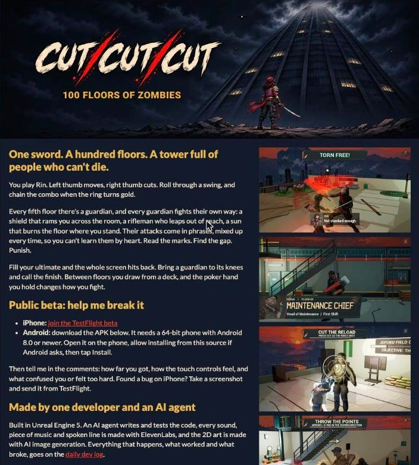

Looking for players
The beta needs people to break it. A list of where players gather, the trailer on TikTok, and an itch.io page for the Android build, plus a clear picture of what an AI agent can and can't post on someone's behalf.
The public beta is open on iPhone. The owner had already posted the trailer on X and on the game's Facebook page, and had noticed that the posts with plenty of hashtags did best. That reach is small. A game this size needs strangers playing it and saying where it breaks, so the evening turned from making the game to finding those strangers.
Where the players are
The first job was a list of where people who test indie games already gather, ranked by how well each fits a mobile action game:
1. Reddit's playtest and feedback communities, where developers ask strangers to play and to be blunt. 2. Reddit's mobile and indie gaming communities, which have more players than developers. 3. TikTok, YouTube Shorts and Instagram Reels, the biggest reach for a phone game. Short clips of fights do the work. 4. The TouchArcade forums, where people who love iPhone games still trade betas. 5. itch.io, which can host the Android build and has its own community of players. 6. Thai gamer and game-developer groups, since the game is made in Thailand. 7. Developer Discords, to swap playtests with other developers. 8. The Unreal community, where an Unreal 5 game on a phone gets attention. 9. Bluesky and Threads, cheap to post to, reach uncertain. 10. A paid playtest service, later, for recordings of strangers thinking aloud as they play.
Three things come before posting anywhere: joining has to take one tap, testers need one place to gather, and the questions have to be specific. How far did you get, how do the controls feel, what confused you. The iPhone beta already had a public TestFlight link. Android had nothing yet.
What an agent can post
The owner asked for the posting to be done for them. Drafts came first, because posts go out under the owner's name and the wording has to be theirs. Then each place was tried in the owner's own browser, and the list got shorter fast:
- Reddit refuses to open at all in either of the agent's browsers. Its posts were left as drafts for the owner.
- Discord, Bluesky and Threads weren't signed in, and the agent doesn't sign in or make accounts for anyone.
- The TouchArcade forums answered with a database error that evening.
- YouTube: the game's dev channel wasn't on the account the browser was signed in to, and the owner chose to skip it.
- Facebook groups: drafts were made for three game-developer groups the owner belongs to. The owner said no to posting in them, and said English only for the rest.
So the night came down to two places.
The trailer on TikTok
The trailer went up on TikTok with a short English caption and a dozen hashtags. The browser's upload tool takes files under 10 MB, so a smaller copy of the trailer was made first. Two labels were turned on before posting: the trailer's narration is an AI voice, so it is marked as AI-generated, and it promotes the owner's own game, so that is disclosed too.
TikTok held it back for a content review at first. When it was checked again an hour and a half later, it was public, with 21 views and one like. A small start, on an account whose earlier videos are about golf.
An itch.io page for Android
The owner signed in to itch.io and asked for a page that looks good, with the image tool allowed for the art.
- Art: the cover and the banner were made from the trailer's title card, in the game's ink-outline style: Rin in front of the tower, office-worker zombies at its foot.
- Screenshots: six real frames from the films, so a player sees the actual game, not drawings.
- Look: a dark navy theme with cream text, gold headings and the logo's red.
- Disclosure: itch.io asks every game whether it uses generative AI. This one says yes, for the graphics, the sound, the text and the code, with a line on how.


The Android build is 496 MB, far beyond what the browser can upload. itch.io's own upload tool, butler, was installed instead. Its login needs the account owner's click, so the owner approved it, and the build went up in one command. That makes the next build one command too.
The build itself was made the same evening, so it has all of the sound from Day 7. The first try failed after two minutes: the cook folder pointed at a work folder that had been emptied. Pointing it at the work folder the earlier builds used fixed it.
The page is ready but still a draft. It goes public when the owner says so.
What has not been checked
- The Android build from itch.io hasn't been installed on a phone. The page lists it as an .apk, which is right, but nobody has downloaded it.
- The itch.io page isn't public yet.
- Whether TikTok reaches game players from this account is unknown after one post.
- Nothing has gone to Reddit, Discord, TouchArcade or the Thai groups. There is no tester server and no feedback form yet.
Next: open the itch.io page, and give testers one place to talk.